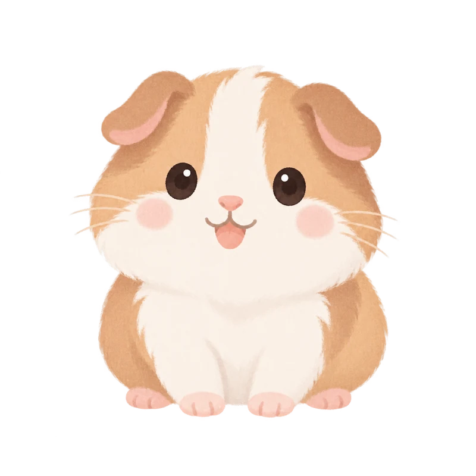
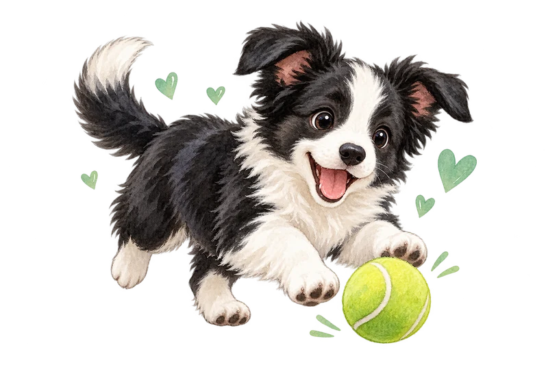

日常记录
奥利奥 Oreo 的日常
小事慢慢记，成长看得见 ♡

2026/10/18
饮水
320
ml
目标 500 ml
64%
主食
120
g
目标 150 g
80%

运动
35
分钟
目标 40 分钟
88%
最近 7 天
截至 2026/10/18
饮水
主食
运动
体重
饮水 · ml
主食 · g
零食 · g
运动 / 玩耍 · 分钟
体重 · kg
排便 · 次数
排尿 · 次数
洗澡 · 次数
驱虫 · 次数
梳毛 / 护理 · 次数
接种疫苗 · 次数
用药记录 · 次数
实际
目标
0
300
600
2026-10-12: 280 ml
280
10/12
周一
2026-10-13: 450 ml
450
10/13
周二
2026-10-14: 500 ml
500
10/14
周三
2026-10-15: 380 ml
380
10/15
周四
2026-10-16: 420 ml
420
10/16
周五
2026-10-17: 320 ml
320
10/17
周六
2026-10-18: 320 ml
320
10/18
今天
10/18 饮水
320 ml
· 目标 500
查看当天
空白表示未记录，不代表实际为零。
今天与前一天记录相同
按当天记录合计比较，未记录不代表实际为零。
记录小贴士
这一天的小事
3 条
自定义项目
08:00
饮水 · 320 ml
08:00
主食 · 120 g
08:00
运动 / 玩耍 · 35 分钟
最近的照顾
洗澡
还没有记录
驱虫
还没有记录
梳毛 / 护理
还没有记录